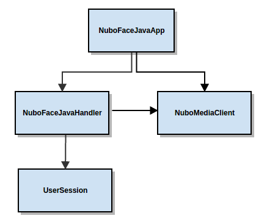

Face Detector¶
This web application consists on a WebRTC video communication with a face detector filter (loopback, the media stream going from client to the media server and back to client).
Compiling & Running¶
This section explain how to compile and run the demo in a local environment. To install the neccesary software please see the installation guide. To compile you have to options:
- To compile everything as it has been explained on the installation guide
- To compile only this module. Again, here we have two different options
cd apps/NuboFaceJava
--First option
sh generate_zip.sh
--Second option
mvn package
If we follow the steps explained on the installation guide , once we restart the media server through the command bellow or reboot the computer, we can test the application accesing the following URL: localhost:8100
sudo /etc/init.d/kurento-media-server restart
For the second option, we can run the aplication through the following command. At this time, the url for accesing the application is: localhost:8080
java -jar target/NuboFaceJava*.jar
Understanding this example¶
The following figure shows a screenshoot of this demo running.

The interface of the application (an HTML web page) is composed by two HTML5 video tags: one showing the local stream (as captured by the device webcam) and the other showing the remote stream sent by the media server back to the client. The video camera stream is sent to Kurento Media Server, which processes and sends it back to the client as a remote stream. To implement this, we need to create a Media Pipeline composed by the following Media Elements:

This is a web application, and therefore it follows a client-server architecture. At the client-side, the logic is implemented in JavaScript. At the server-side we use a Java EE application server consuming a Client API to control the Media Server capabilities. To communicate these entities, two WebSockets are used. First, a WebSocket is created between client and application server to implement a custom signaling protocol. Second, another WebSocket is used to perform the communication between the Java Client and the Media Server. To communicate the client with the Java EE application server the platform uses a simple signaling protocol based on JSON messages over WebSocket‘s. SDP and ICE candidates needs to be exchanged between client and server to establish the WebRtc session. If you are interested on knowing more about the messages exchanged between them, have a look to this example .
Application Server Side¶
This demo has been developed using a Java EE application server based on the Spring Boot framework. This technology can be used to embed the Tomcat web server in the application and thus simplify the development process.
In the following figure you can see a class diagram of the server side code:
{kind=link}
The main class of this demo is named NuboFaceJavaApp. As you can see, the NuboMediaClient is instantiated in this class as a Spring Bean. This bean is used to create Media Pipelines, which are used to add media capabilities to your applications. In this instantiation we see that we need to specify to the client library the location of the Kurento Media Server. In this example, we assume it’s located at localhost listening in port 8888. If you reproduce this tutorial you’ll need to insert the specific location of your Kurento Media Server instance there.
@Configuration
@EnableWebSocket
@EnableAutoConfiguration
public class NuboFaceJavaApp implements WebSocketConfigurer {
final static String DEFAULT_KMS_WS_URI = "ws://localhost:8888/kurento";
@Bean
public NuboFaceJavaHandler handler() {
return new NuboFaceJavaHandler();
}
@Bean
public KurentoClient kurentoClient() {
return KurentoClient.create(System.getProperty("kms.ws.uri",
DEFAULT_KMS_WS_URI));
}
@Override
public void registerWebSocketHandlers(WebSocketHandlerRegistry registry) {
registry.addHandler(handler(), "/nubofacedetector");
}
public static void main(String[] args) throws Exception {
new SpringApplication(NuboFaceJavaApp.class).run(args);
}
}
This web application follows Single Page Application architecture and uses a WebSocket to communicate client with application server by means of requests and responses. Specifically, the main app class implements the interface WebSocketConfigurer to register a WebSocketHanlder to process WebSocket requests in the path /nubofacedetector.
NuboFaceJavaHandler class implements TextWebSocketHandler to handle text WebSocket requests. The central piece of this class is the method handleTextMessage. This method implements the actions for requests, returning responses through the WebSocket. In other words, it implements the server part of the signaling protocol depicted.
In the designed protocol there are three different kinds of incoming messages to the Server: start, show_faces, scale_factor, process_num_frames, width_to_process, stop and onIceCandidates. These messages are treated in the switch clause, taking the proper steps in each case.
public class NuboFaceJavaHandler extends TextWebSocketHandler {
@Override
public void handleTextMessage(WebSocketSession session, TextMessage message)
throws Exception {
JsonObject jsonMessage = gson.fromJson(message.getPayload(),
JsonObject.class);
log.debug("Incoming message: {}", jsonMessage);
switch (jsonMessage.get("id").getAsString()) {
case "start":
start(session, jsonMessage);
break;
case "show_faces":
setVisualization(session,jsonMessage);
break;
case "scale_factor":
log.debug("Case scale factor");
setScaleFactor(session,jsonMessage);
break;
case "process_num_frames":
log.debug("Case process num frames");
setProcessNumberFrames(session,jsonMessage);
break;
case "width_to_process":
log.debug("Case width to process");
setWidthToProcess(session,jsonMessage);
break;
case "stop": {
UserSession user = users.remove(session.getId());
if (user != null) {
user.release();
}
break;
}
case "onIceCandidate": {
JsonObject candidate = jsonMessage.get("candidate")
.getAsJsonObject();
UserSession user = users.get(session.getId());
if (user != null) {
IceCandidate cand = new IceCandidate(candidate.get("candidate")
.getAsString(), candidate.get("sdpMid").getAsString(),
candidate.get("sdpMLineIndex").getAsInt());
user.addCandidate(cand);
}
break;
}
default:
sendError(session,
"Invalid message with id "
+ jsonMessage.get("id").getAsString());
break;
}
}
private void start(WebSocketSession session, JsonObject jsonMessage) {
...
}
private void sendError(WebSocketSession session, String message) {
...
}
...
}
In the following snippet, we can see the start method. It handles the ICE candidates gathering, creates a Media Pipeline, creates the Media Elements (WebRtcEndpoint and NuboFaceDetectorFilter) and make the connections among them. A startResponse message is sent back to the client with the SDP answer.
private void start(final WebSocketSession session, JsonObject jsonMessage) {
try {
// Media Logic (Media Pipeline and Elements)
UserSession user = new UserSession();
MediaPipeline pipeline = kurento.createMediaPipeline();
user.setMediaPipeline(pipeline);
webRtcEndpoint = new WebRtcEndpoint.Builder(pipeline).build();
user.setWebRtcEndpoint(webRtcEndpoint);
users.put(session.getId(), user);
webRtcEndpoint
.addOnIceCandidateListener(new EventListener<OnIceCandidateEvent>() {
@Override
public void onEvent(OnIceCandidateEvent event) {
JsonObject response = new JsonObject();
response.addProperty("id", "iceCandidate");
response.add("candidate", JsonUtils
.toJsonObject(event.getCandidate()));
try {
synchronized (session) {
session.sendMessage(new TextMessage(
response.toString()));
}
} catch (IOException e) {
log.debug(e.getMessage());
}
}
});
face = new NuboFaceDetector.Builder(pipeline).build();
webRtcEndpoint.connect(face);
face.connect(webRtcEndpoint);
// SDP negotiation (offer and answer)
String sdpOffer = jsonMessage.get("sdpOffer").getAsString();
String sdpAnswer = webRtcEndpoint.processOffer(sdpOffer);
// Sending response back to client
JsonObject response = new JsonObject();
response.addProperty("id", "startResponse");
response.addProperty("sdpAnswer", sdpAnswer);
synchronized (session) {
session.sendMessage(new TextMessage(response.toString()));
}
webRtcEndpoint.gatherCandidates();
} catch (Throwable t) {
sendError(session, t.getMessage());
}
}
The sendError method is quite simple: it sends an error message to the client when an exception is caught in the server-side.
private void sendError(WebSocketSession session, String message) {
try {
JsonObject response = new JsonObject();
response.addProperty("id", "error");
response.addProperty("message", message);
session.sendMessage(new TextMessage(response.toString()));
} catch (IOException e) {
log.error("Exception sending message", e);
}
}
Application Client Side¶
Let’s move now to the client-side of the application. To call the previously created WebSocket service in the server-side, we use the JavaScript class WebSocket. We use an specific JavaScript library called kurento-utils.js to simplify the WebRTC interaction with the server. This library depends on adapter.js, which is a JavaScript WebRTC utility maintained by Google that abstracts away browser differences. Finally jquery.js is also needed in this application.
These libraries are linked in the index.html web page, and are used in the index.js. In the following snippet we can see the creation of the WebSocket (variable ws) in the path /nubofacedetector. Then, the onmessage listener of the WebSocket is used to implement the JSON signaling protocol in the client-side. Notice that there are three incoming messages to client: startResponse, error, and iceCandidate. Convenient actions are taken to implement each step in the communication. For example, in functions start the function WebRtcPeer.WebRtcPeerSendrecv of kurento-utils.js is used to start a WebRTC communication.
var ws = new WebSocket('ws://' + location.host + '/nubofacedetector');
ws.onmessage = function(message) {
var parsedMessage = JSON.parse(message.data);
console.info('Received message: ' + message.data);
switch (parsedMessage.id) {
case 'startResponse':
startResponse(parsedMessage);
break;
case 'iceCandidate':
webRtcPeer.addIceCandidate(parsedMessage.candidate, function (error) {
if (!error) return;
console.error("Error adding candidate: " + error);
});
break;
case 'error':
if (state == I_AM_STARTING) {
setState(I_CAN_START);
}
onError("Error message from server: " + parsedMessage.message);
break;
default:
if (state == I_AM_STARTING) {
setState(I_CAN_START);
}
onError('Unrecognized message', parsedMessage);
}
}
function start() {
console.log("Starting video call ...")
// Disable start button
setState(I_AM_STARTING);
showSpinner(videoInput, videoOutput);
console.log("Creating WebRtcPeer and generating local sdp offer ...");
var options = {
localVideo: videoInput,
remoteVideo: videoOutput,
onicecandidate: onIceCandidate
}
webRtcPeer = new kurentoUtils.WebRtcPeer.WebRtcPeerSendrecv(options,
function (error) {
if(error) {
return console.error(error);
}
webRtcPeer.generateOffer (onOffer);
});
}
function onOffer(error,offerSdp) {
if (error) return console.error ("Error generating the offer");
console.info('Invoking SDP offer callback function ' + location.host);
var message = {
id : 'start',
sdpOffer : offerSdp
}
sendMessage(message);
}
function onIceCandidate(candidate) {
console.log("Local candidate" + JSON.stringify(candidate));
var message = {
id: 'onIceCandidate',
candidate: candidate
};
sendMessage(message);
}
}
Dependencies¶
This Java Spring application is implemented using Maven. The relevant part of the pom.xml is where NUBOMEDIA dependencies are declared. we need two dependencies: the Client Java dependency (kurento-client) and the JavaScript Kurento utility library (kurento-utils) for the client-side.
<dependencies>
<dependency>
<groupId>org.kurento</groupId>
<artifactId>kurento-client</artifactId>
<version>|CLIENT_JAVA_VERSION|</version>
</dependency>
<dependency>
<groupId>org.kurento</groupId>
<artifactId>kurento-utils-js</artifactId>
<version>|CLIENT_JAVA_VERSION|</version>
</dependency>
</dependencies>
Note
We are in active development. You can find the latest version of Kurento Java Client at Maven Central.
Kurento Java Client has a minimum requirement of Java 7. To configure the application to use Java 7, we have to include the following properties in the properties section:
<maven.compiler.target>1.7</maven.compiler.target>
<maven.compiler.source>1.7</maven.compiler.source>
Browser dependencies (i.e. bootstrap, ekko-lightbox, and adapter.js) are
handled with Bower. This dependencies are defined in the file
bower.json The command bower install is automatically called from Maven. Thus, Bower
should be present in your system. It can be installed in an Ubuntu machine as
follows:
curl -sL https://deb.nodesource.com/setup | sudo bash -
sudo apt-get install -y nodejs
sudo npm install -g bower
Note
kurento-utils-js can be resolved as a Java dependency but also is available on Bower. To use this library from Bower, add this dependency to the file bower.json:
"dependencies": {
"kurento-utils": "|UTILS_JS_VERSION|"
}